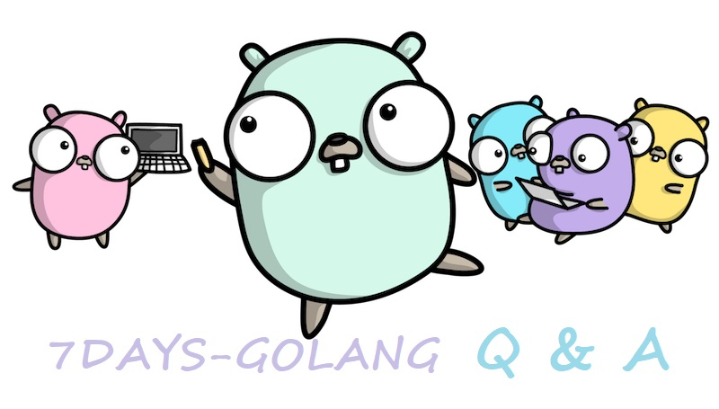

Go 接口型函数的使用场景
Go 语言/golang 中函数式接口或接口型函数的实现与价值，什么是接口型函数，为什么不直接将函数作为参数，而是封装为一个接口。Go 语言标准库 net/http 中是如何使用接口型函数的。

问题
在 动手写分布式缓存 - GeeCache第二天 单机并发缓存 这篇文章中，有一个接口型函数的实现：
// A Getter loads data for a key.
type Getter interface {
Get(key string) ([]byte, error)
}
// A GetterFunc implements Getter with a function.
type GetterFunc func(key string) ([]byte, error)
// Get implements Getter interface function
func (f GetterFunc) Get(key string) ([]byte, error) {
return f(key)
}
这里呢，定义了一个接口 Getter，只包含一个方法 Get(key string) ([]byte, error)，紧接着定义了一个函数类型 GetterFunc，GetterFunc 参数和返回值与 Getter 中 Get 方法是一致的。而且 GetterFunc 还定义了 Get 方式，并在 Get 方法中调用自己，这样就实现了接口 Getter。所以 GetterFunc 是一个实现了接口的函数类型，简称为接口型函数。
这个接口型函数的实现就引起了好几个童鞋的关注。接口型函数只能应用于接口内部只定义了一个方法的情况，例如接口 Getter 内部有且只有一个方法 Get。既然只有一个方法，为什么还要多此一举，封装为一个接口呢？定义参数的时候，直接用 GetterFunc 这个函数类型不就好了，让用户直接传入一个函数作为参数，不更简单吗？
所以呢，接口型函数的价值什么？
价值
我们想象这么一个使用场景，GetFromSource 的作用是从某数据源获取结果，接口类型 Getter 是其中一个参数，代表某数据源：
func GetFromSource(getter Getter, key string) []byte {
buf, err := getter.Get(key)
if err == nil {
return buf
}
return nil
}
我们可以有多种方式调用该函数：
- 方式一：GetterFunc 类型的函数作为参数
GetFromSource(GetterFunc(func(key string) ([]byte, error) {
return []byte(key), nil
}), "hello")
支持匿名函数，也支持普通的函数：
func test(key string) ([]byte, error) {
return []byte(key), nil
}
func main() {
GetFromSource(GetterFunc(test), "hello")
}
将 test 强制类型转换为 GetterFunc，GetterFunc 实现了接口 Getter，是一个合法参数。这种方式适用于逻辑较为简单的场景。
- 方式二：实现了 Getter 接口的结构体作为参数
type DB struct{ url string}
func (db *DB) Query(sql string, args ...string) string {
// ...
return "hello"
}
func (db *DB) Get(key string) ([]byte, error) {
// ...
v := db.Query("SELECT NAME FROM TABLE WHEN NAME= ?", key)
return []byte(v), nil
}
func main() {
GetFromSource(new(DB), "hello")
}
DB 实现了接口 Getter，也是一个合法参数。这种方式适用于逻辑较为复杂的场景，如果对数据库的操作需要很多信息，地址、用户名、密码，还有很多中间状态需要保持，比如超时、重连、加锁等等。这种情况下，更适合封装为一个结构体作为参数。
这样，既能够将普通的函数类型（需类型转换）作为参数，也可以将结构体作为参数，使用更为灵活，可读性也更好，这就是接口型函数的价值。
使用场景
这个特性在 groupcache 等大量的 Go 语言开源项目中被广泛使用，标准库中用得也不少，net/http 的 Handler 和 HandlerFunc 就是一个典型。
我们先看一下 Handler 的定义：
type Handler interface {
ServeHTTP(ResponseWriter, *Request)
}
type HandlerFunc func(ResponseWriter, *Request)
func (f HandlerFunc) ServeHTTP(w ResponseWriter, r *Request) {
f(w, r)
}
摘自 Go 语言源代码 net/http/server.go
我们可以 http.Handle 来映射请求路径和处理函数，Handle 的定义如下：
func Handle(pattern string, handler Handler)
第二个参数是即接口类型 Handler，我们可以这么用。
func home(w http.ResponseWriter, r *http.Request) {
w.WriteHeader(http.StatusOK)
_, _ = w.Write([]byte("hello, index page"))
}
func main() {
http.Handle("/home", http.HandlerFunc(home))
_ = http.ListenAndServe("localhost:8000", nil)
}
通常，我们还会使用另外一个函数 http.HandleFunc，HandleFunc 的定义如下：
func HandleFunc(pattern string, handler func(ResponseWriter, *Request))
第二个参数是一个普通的函数类型，那可以直接将 home 传递给 HandleFunc：
func main() {
http.HandleFunc("/home", home)
_ = http.ListenAndServe("localhost:8000", nil)
}
那如果我们看过 HandleFunc 的内部实现的话，就会知道两种写法是完全等价的，内部将第二种写法转换为了第一种写法。
func (mux *ServeMux) HandleFunc(pattern string, handler func(ResponseWriter, *Request)) {
if handler == nil {
panic("http: nil handler")
}
mux.Handle(pattern, HandlerFunc(handler))
}
如果你仔细观察，会发现 http.ListenAndServe 的第二个参数也是接口类型 Handler，我们使用了标准库 net/http 内置的路由，因此呢，传入的值是 nil。那如果这个地方我们传入的是一个实现了 Handler 接口的结构体呢？就可以完全托管所有的 HTTP 请求，后续怎么路由，怎么处理，请求前后增加什么功能，都可以自定义了。慢慢地，就变成了一个功能丰富的 Web 框架了。如果你感兴趣呢，可以阅读 7天用Go从零实现Web框架Gee教程。
其他语言类似特性
如果有 Java 编程经验的同学可能比较有感触。Java 1.5 中是不支持直接传入函数的，参数要么是接口，要么是对象。举一个最简单的例子，列表自定义排序时，需要实现一个匿名的 Comparator 类，重写 compare 方法。
Collections.sort(list, new Comparator<Integer>(){
@Override
public int compare(Integer o1, Integer o2) {
return o2 - o1;
}
});
Java 1.8 中引入了大量的函数式编程的特性，其中 lambda 表达式和函数式接口就是一个很好的简化 Java 写法的特性。Java 1.8 中，上述的例子可以简化为：
Collections.sort(list, (Integer o1, Integer o2) -> o2 - o1 );
即从需要构造一个匿名对象简化为只需要一个 lambda 函数表达式，可以认为是面向对象与函数式编程的一种结合。同样地，这种写法只支持只定义了一个方法的接口类型。正是这种结合，可以达到实现相同代码，代码量更少的目的。